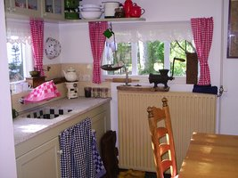
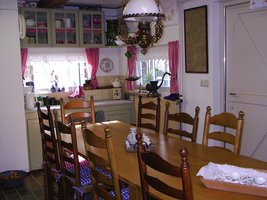

Atelier
De Olde
Boerenkeuken
Workshops, Cadeaus en Oude Ambachten
Stap eens over de drempel, even terug in de tijd van de oud hollandse gezelligheid! In de Oud Hollands ingerichte keuken vol herinneringen, kunt u terecht voor aardigheidjes, cadeaus, jam, andere ambachtelijke producten en het volgen van workshops.



Workshops
Goede Doelen
Hier komt kort inleidingtekst over goede doelen.

Even Voorstellen
Mijn naam is Janny Nagelhout. bljija kjdjfnjkjajfkrnbljija kjdjfnjkjarnbljija kjdjfnjkjajfkrn errennn dnd ennmn........
Contact
Voor meer informatie kunt u een contactformulier invullen of telefonisch contact opnemen via
Tel. 0561 - 44 18 14